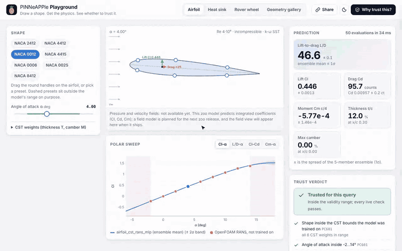

Playground: physics surrogates in the browser¶
The Playground is a static web page. You draw an airfoil, size a heat sink or drive a lunar-rover wheel, and a PINNeAPPle zoo model answers immediately. Next to each answer the page shows the physics checks and the model's trust verdict. Everything runs in the browser: nothing is installed and nothing is sent to a server. The URL holds the whole state, so a link opens exactly what you were looking at.

| Mode | Model (zoo) | What you change | What you get |
|---|---|---|---|
| Airfoil | airfoil_cst_rans_mlp |
Drag the CST handles on the airfoil, pick a NACA preset, set the angle of attack | Cl, Cd, Cm and L/D with the spread of the 5-member ensemble; the polar sweep, with the OpenFOAM runs the model never saw and an XFOIL polar overlaid for the NACA presets |
| Heat sink | heatsink_forced_mlp |
Fin count, height and thickness, air speed (plus base, material, power) | Thermal resistance with its split-conformal 95 % bound, base temperature, pressure drop, and R and ΔP against air speed |
| Rover wheel | rover_contact_grc1_viper |
Slip and sinkage of the VIPER wheel on GRC-1 | Drawbar pull, normal load and torque, with held-out points of the analytic Wong–Reece model near the current sinkage |
| Geometry gallery | pp.geometries |
Pick one of the 17 geometries | A 3-D view of the light glTF file, its dimensions and sources, and the code that regenerates it |
The trust verdict¶
The checks are the library's per-query checks, pp.zoo.query_checks (see
the zoo guide). They are evaluated inside the
model's ONNX graph on every change. Their rule IDs are the ones pinneapple check uses:
- PC601, out-of-range query. Is every input inside the model card's validity range? This includes the derived
limits: the fin gap and the source fraction of the heat sink. It is the same rule as
ZooModel.in_range, tested on thousands of inputs. A query that fails it is labelled an extrapolation, in red. - PC403 / PC402, non-finite or unphysical output. For example, a negative drag, or airfoil surfaces that cross.
- PC602, sparse training region. The ensemble spread is compared with its 99th percentile on the held-out shapes.
- PC302, model residual. The zoo gate's physics checks, evaluated at the query:
- the lift slope against thin-airfoil theory, and Cl rising with α;
- more airflow or a more conductive material lowering the resistance;
- the Mohr–Coulomb traction limit, My ≥ R·Fx, and the monotonic trends of the wheel.
The Why trust this? panel shows the full model card:
- the validity range;
- the held-out metrics against the independent reference, next to the zoo's acceptance limits;
- the physics checks of the stored trust report;
- data provenance and known limitations;
- the SHA-256 and the measured parity of the ONNX file the page runs.
The airfoil design constraints are shown separately: t/c ≥ 11 % and |Cm| ≤ 0.10, the defaults of
pinneapple_design.aero.aircraft.Requirements. They say whether a design is acceptable, not whether the model can
be trusted.
Note that the NACA 4412 and 4415 presets sit just outside the model's CST box: M1 0.142 > 0.14 and M2 0.123 > 0.12.
pp.zoo raises an OutOfRangeWarning for them, and the page marks them red. Their OpenFOAM reference runs, which
the model never saw, are overlaid on the polar, so you can judge the extrapolation yourself.
There is no pressure or velocity field yet. The zoo's airfoil model predicts integrated coefficients only, and the field model (MeshGraphNet) is waiting for its training fields to be regenerated and published. The page says so in place of a field view.
How it is built: the library does the work, the app draws¶
The app (apps/playground/site/) is UI code only. Everything it computes comes from library artefacts.
The zoo models. pp.zoo.export_web writes each model as one ONNX graph (pinneapple_hub.zoo.export):
- input
x, for the predictions, and inputquery, for the query checks; - pre- and post-processing included: CST encoding, log features, normalisation, ensemble mean and spread, L/D per member, and the conformal bound;
- a JSON file next to it with the model card, the check spec (limits, templates, verdict texts) and the reference points to overlay.
The airfoil geometry. pinneapple_design.aero.geometry_onnx exports the CST geometry as two float64 graphs.
They reproduce pinneapple_design.aero.geometry to round-off:
- the outline, thickness and camber, the two validity quantities, and the positions of the drag handles;
- handle heights back to CST weights, via
geometry.shape_from_handles.
The gallery. pp.geometries.export_web writes an index and thumbnails.
The runtime. pinneapple_hub/zoo/web/onnx.js and zoo.js ship with the package. They contain:
- a ~400-line ONNX interpreter that reads the protobuf directly;
loadModel,loadAirfoilGeometry, andevaluate, which turns the check values into statuses and a verdict exactly likepinneapple_hub.zoo.checks.evaluate.
engine=ort in the URL hash runs the same files in onnxruntime-web 1.22.0, loaded from jsDelivr. It is about 10 MB
of WebAssembly, so it is opt-in. Pyodide is not used: there is no Python left to run in the browser.
Sizes: the airfoil mode loads 0.67 MB before compression. A 50-point polar with its checks takes 10–60 ms.
What is tested, in CI (.github/workflows/playground.yml):
- Library, Python (
tests/test_zoo_web.py): - The ONNX export of each model matches PyTorch to 1e-5 on every held-out and independent-reference input. Measured: 5.1e-7 airfoil, 1.6e-6 heat sink, 5.7e-7 rover.
- The query checks never change status away from a limit.
- Range checks fail exactly where
ZooModel.in_rangeis False. - Held-out inputs are trusted.
- The geometry graphs match NumPy to 1e-10.
- The committed bundle in
data/webis current. - Library, JavaScript (
tests/js/zoo_web.test.mjs): the interpreter,evaluate(statuses and detail texts) and the geometry graphs, compared with Python fixtures. - App (
tests/test_playground.pyand the Playwright test inapps/playground/tests/e2e): - Every mode loads.
- The numbers and verdicts on the page match Python for fixed inputs, in and out of range.
- Dragging changes the answer and the URL, and a shared link reproduces the state.
- The trust panel shows the evidence.
- The page works offline, and the mobile layout has no horizontal scroll.
- onnxruntime-web gives the same numbers as the built-in interpreter.
- The app holds no model, geometry or check code.
Run it locally¶
python apps/playground/build.py --serve # http://localhost:8765/
The build uses only the standard library. It assembles the UI from three sources:
- the library's runtime and its browser bundles (
data/web/zoo,data/web/geometries); - three.js, vendored in
pinneapple_tools; - the light glTF files from
data/geometries/.
The output uses relative paths only, so it works under any URL prefix.
When a zoo model or the geometry library changes, regenerate the bundles with the library:
python -m pinneapple_hub.zoo.web data/web/zoo # needs torch, onnx, onnxruntime
python -m pinneapple_design.geometry_library.web data/web/geometries
cd apps/playground && npm ci && npm test # JS runtime tests + Playwright smoke test
Deploying¶
The page is static, so there are two options, both prepared and neither switched on:
- Docker + Caddy, next to the other apps.
apps/playground/Dockerfilebuilds the site and serves it with Caddy on port 8095.apps/deployhas theplaygroundservice and thePLG_DOMAINsite block. - GitHub Pages, under the docs site. Set the repository variable
PLAYGROUND_PAGEStotrue. The docs workflow then publishes the build athttps://pinneapple-labs.github.io/PINNeAPPle/playground/.